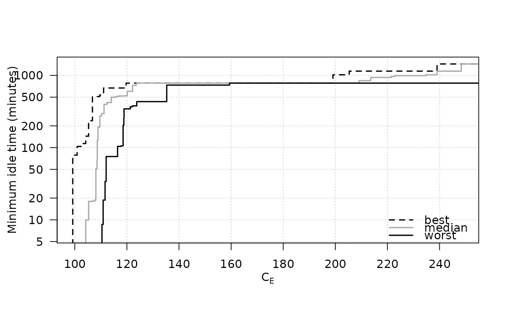

R/eaf-package.R
SPEA2minstoptimeRichmond.RdThe data has the only goal of providing an example of use of eafplot.
SPEA2minstoptimeRichmond
A data frame as produced by read_datasets. The second
column measures time in seconds and corresponds to a maximisation problem.
Manuel López-Ibáñez. Operational Optimisation of Water Distribution Networks. PhD thesis, School of Engineering and the Built Environment, Edinburgh Napier University, UK, 2009.
data(HybridGA) data(SPEA2minstoptimeRichmond) SPEA2minstoptimeRichmond[,2] <- SPEA2minstoptimeRichmond[,2] / 60 eafplot (SPEA2minstoptimeRichmond, xlab = expression(C[E]), ylab = "Minimum idle time (minutes)", maximise = c(FALSE, TRUE), las = 1, log = "y", legend.pos = "bottomright")